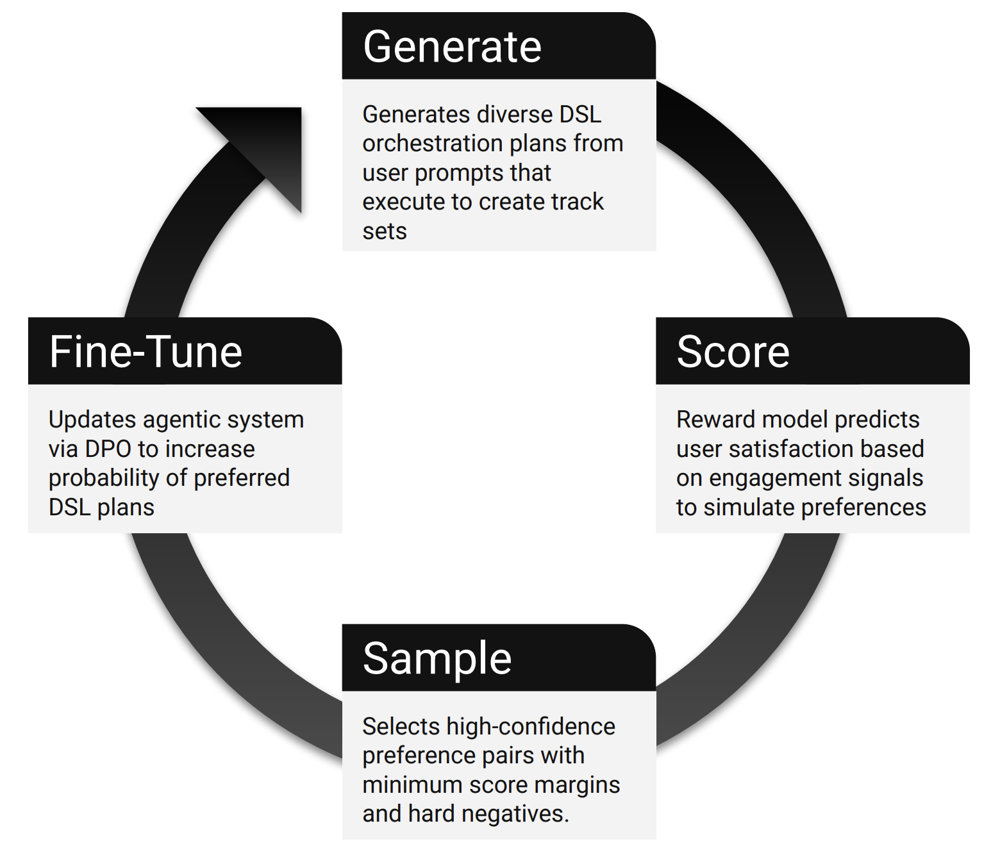
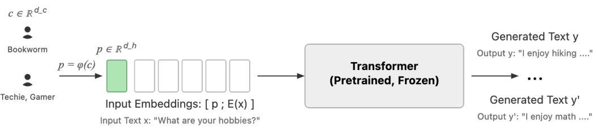
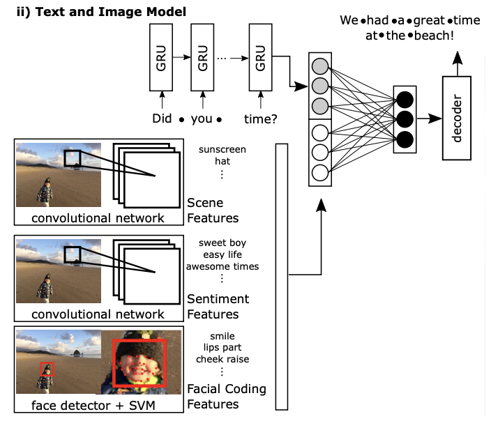

I'm a Senior Research Scientist at Spotify, working on preference learning, reward modeling, and DPO/RLHF for agentic LLMs at production scale. My PhD at Harvard focused on dialogue systems.
I'm interested in the science of building AI that adapts to individual users. I developed Embedding-to-Prefix and lead the foundational research powering Spotify's AI experiences, including AI Playlist and AI DJ.

I developed a hybrid approach combining reward models and Direct Preference Optimization (DPO) to create LLM-based agentic systems that continuously learn from user feedback. This method enables AI systems to interpret musical queries, orchestrate tools, and adapt through preference learning, achieving 4% increase in listening time and 70% reduction in erroneous tool calls in production.
[Spotify Research, 2025]
Featured in Spotify Q2 2025 earnings call as core AI strategy · summary · audio (10:50)

I developed a novel architecture that enables deep personalization of large language models using pre-computed user embeddings. This method bridges representation learning and generative AI, allowing foundation models to be steered by rich user context without costly fine-tuning. The approach achieves strong personalization while maintaining computational efficiency at scale.
[NeurIPS CCFM, 2025]

I built a multimodal dialogue system that generates contextually appropriate responses by jointly processing text and visual information. This work established foundational methods for incorporating visual sentiment and scene understanding into conversational AI, demonstrating how computational systems can respond to nuanced, multimodal human inputs.
[CHI, 2018]